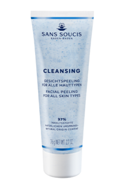

СКРАБ ДЛЯ ЛИЦА ДЕЛИКАТНЫЙ
Пилинг для лица с гранулами бамбука и жожоба мягко и бережно очищает кожу от
омертвевших чешуек и загрязнений, стимулирует микроциркуляцию, делая кожу гладкой и
эластичной. МАСЛО СЕМЯН ЛИМНАНТЕСА стабилизирует водный баланс кожи, питает
и оставляет ощущение шелковисто-мягкой кожи. ГРАНУЛЫ ЖОЖОБА и БАМБУКА
избавляют кожу от омертвевших клеток, «массирует» кожу и способствует ее
микроциркуляции. ЭКСТРАКТ ВАСИЛЬКА освежает кожу, уменьшает легкие отеки и
успокаивает раздражение и покраснение.